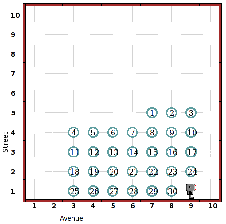

The task is to draw a calendar in a
subroutine with arguments (the number of days after Sunday that the
month starts, the number of days in the month). Then, to draw the
calendar for September 2011, call the subroutine as follows:
calendar(4,30)
